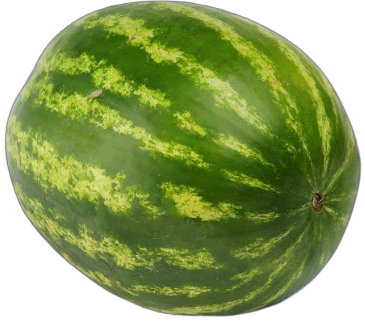
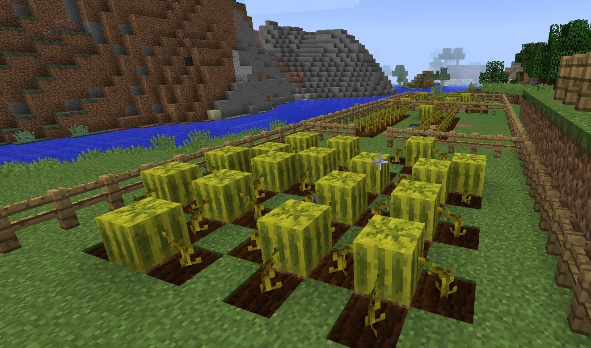

Это арбуз или бузар?
Сейчас мы ответим на этот вопрос!

Нажми на ссылку, чтобы узнать!!!
Арбуз обыкновенный — однолетнее травянистое растение, вид рода Арбуз, семейства Тыквенные. В зависимости от сорта может быть столового или кормового назначения. В качестве кормового также используется арбуз кормовой.
Бахчевая культура. Плод — тыквина, шаровидной, овальной формы; окраска коры от белой и жёлтой до тёмно-зелёной с рисунком в виде полосок и пятен; мякоть, как правило, розовая, красная, малиновая, реже — белая и жёлтая.
Слово заимствовано из кыпчак: харбуз. По-украински и по-белорусски арбуз обозначается словом кавун (что по-тюркски означает дыня), тогда как гарбузом украинцы и белорусы называют тыкву. Кавуном также многие называют арбуз в юго-западных регионах России. харбуза — дыня (буквально «большой огурец») причём харбуза на таджикском и персидском языке, а также на дари означает дыня; Напротив, в болгарском языке арбуз обозначается словом диня.
Арбуз в майнкрафте.

Арбуз (Melon Block) — твёрдый блок, из которого при разрушении выпадают ломтики арбуза. Может быть выращен из семян.
Блок арбуза может быть разрушен поршнем, рукой или любым инструментом, но топор и меч ускоряют этот процесс, при этом из арбуза выпадают 3—7 ломтиков арбуза. При разрушении блока инструментом, зачарованным на удачу, можно получить до 9 ломтиков арбуза. Шёлковое касание позволяет получить арбуз в виде блока.
Арбузы генерируются в джунглях. Также их можно найти растущими в деревнях саванны и пустыни и иногда в лесных особняках.
Выращивать арбузы, как и тыквы, можно, посадив арбузные семена в грядку. После посадки начинается созревание центрального стебля, который можно ускорить костной мукой. Арбузы начнут появляться, если стебель созрел, один из 4-х прилегающих к стеблю блоков свободен и под ним находится земля, дёрн, грядка, подзол или каменистая земля. Созревают арбузы от 10 до 30 минут. Когда стебель создаёт арбуз, он прикрепляется к своёму плоду и пока прикреплён не может создавать другие арбузы. Если же срубить созданный стеблем арбуз, он открепится от него.
Узнать всё о дыне!